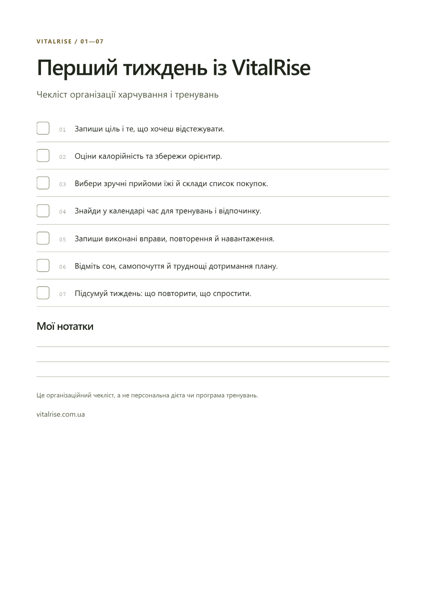

Демо та контент для просування
Окремий перегляд матеріалів, не новий дизайн сайту. Українські написи, справжній інтерфейс, демонстраційні дані. Ролики без озвучення та сторонньої музики.
Коротка версія · 15 секунд
Завантажити MP4Що таке PDF-бонус?
Запропонований односторінковий чекліст першого тижня. 7 організаційних кроків і місце для нотаток. Не персональний раціон і не заміна платного плану. На сайт не додано.
Відкрити PDF-чернетку
Пакет для просування
Тексти публікацій, Stories і план на тижденьСценарій та текст майбутнього озвученняОбкладинка · PNGStory: калькулятор · PNGStory: приклад результату · PNGStory: Start · PNG


Перед публікацією перевірити ціни, права на рекламне використання фото та відповідність живої версії сайту показаним екранам. Рекламні кампанії не запускалися.